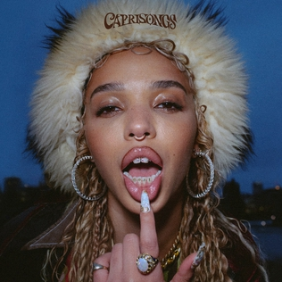
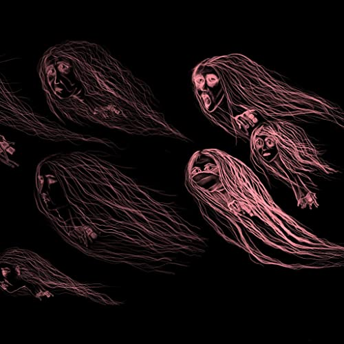
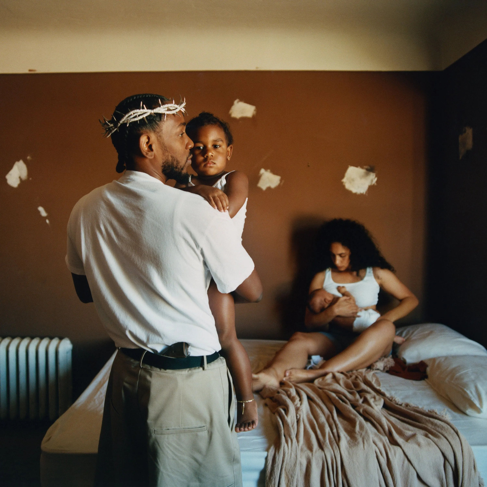
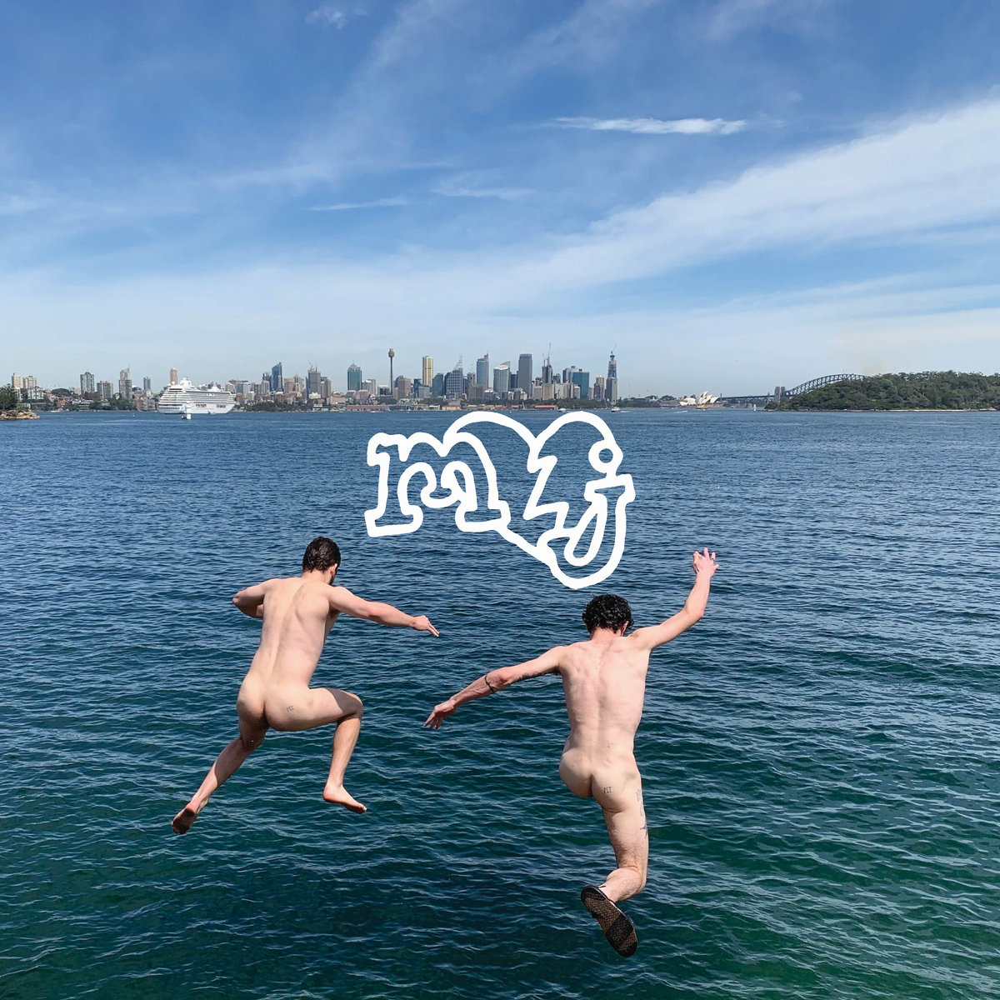
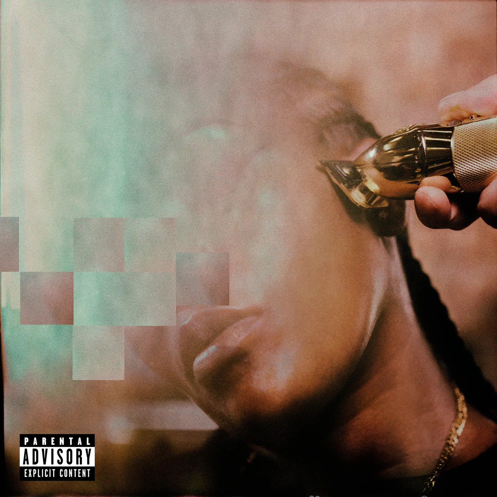
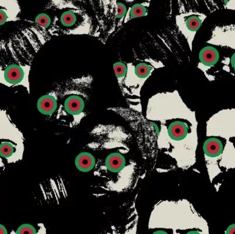
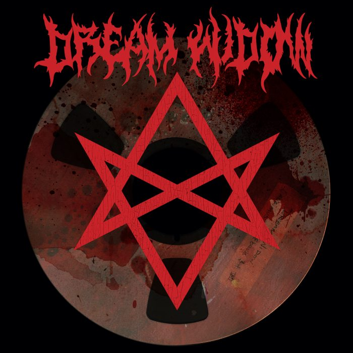
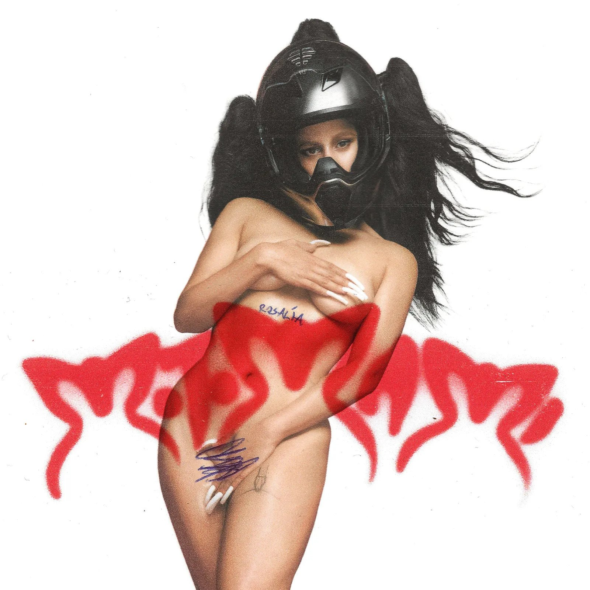
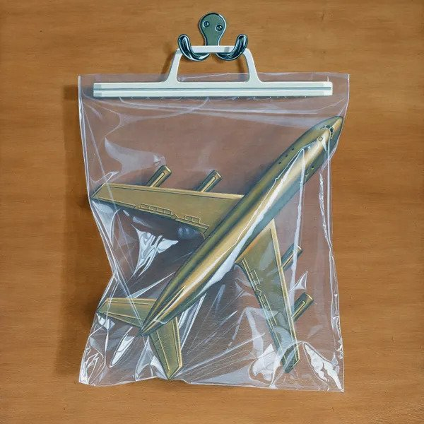
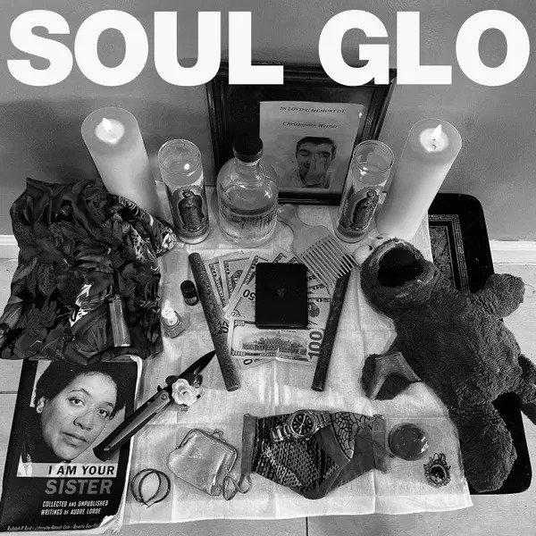

This year was a little strange for me, music-wise...
I don't exactly remember what prompted it,
but I ended up spending a bunch of time early in the year digging through my listening history. 12 years ago I started tracking all the songs I'd listen to, and it's been fun to occasionally look back and find things I'd forgotten about.
This time, I ended up discovering a bunch of old metal albums that I thought I'd grown out of, but decided to give them a go and found myself coming back to them again and again.
I still listened to a ton of albums that were released this year (62 to be exact), but I think this experience made me a little more willing to give albums I might have just dismissed in past years some more time to grow on me, and this list is at least a little bit a reflection of that. A little more diverse, a little louder.
But first, some songs that stuck out to me this year, in no particular order:
And now, my top 10 albums of 2022...

FKAs one of those artists I really need to be in the right mood for, but this album is really great. FKA jumps all over the place with different genres and this album is captivating from start to finish.

They just don't miss. After having to reschedule multiple times we finally got to see Purity Ring this year and man was it good to be back. Their signature style of pop just never gets old for me, and this is no exception.

For my money, Kendrick's the best rapper alive right now. Everything about this album is fantastic, a couple skippable songs are the only thing really keeping this from climbing higher to me. A suprise feature from Sampha is a personal highlight, it's cool to see him getting more attention.

Sweet Tooth is an appropriate name, because this album is pure fluff. No life changing catharses here, but it's catchy, goes down easy, and is a lot of fun.

The beats and production on this album are just untouchable. The beats are catchy, unique and perfectly match Leikeli's bars. This album goes hard and is such an easy listen from start to finish.

You had me at MF DOOM feature. For me, Belize is clearly the highlight of the album, though there's a plethora of other banger features on this album including RTJ, Raekwon and Joey Bada$$. This album is, to me, just Hip Hop in it's best form. The beats are simple, but in the way like a really, really good sushi course is. Everything is thought through and exactly where it needs to be, and compliments the absolute deluge of talented rappers perfectly.

I definitely didn't have 'Dave Grohl releases an honest to goodness thrash metal album' on my 2022 bingo card, but here we are. Dave Grohl can do it all and this just reinforces that, though he's really not treading any new ground here, it's fast, loud, and scratches an itch. The production on the album is absolutely spot on as well, balancing clarity and raw energy.

With song sung in Spanish with titles like HENTAI and CHICKEN TERIYAKI, what isn't to love? Calling this album just a pop album is a little bit of a disservice, since my favourite part of this album is how seamlessly she's able to blend different genres into a bunch of super-catchy and compelling songs.

The theatre kids are back at it again. A fantastic follow up to my album of the year last year, BCNR returns with more of the same, but not in a bad way. The lead vocals talk-singing, combined with his unnatturally deep voice is just so gripping.

This album, as the kids say, rips. It's loud, fast and relentless. There are some great features mixed in, which is kind of a different thing for the genre, and some less-than-surface level themes going on with the lyrics. This one took a little while to grow on me, but has been on repeat since.